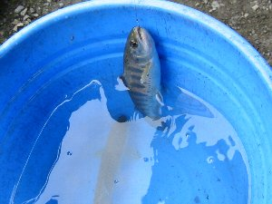
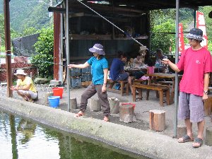
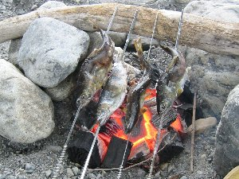

こどもの日に帰ろう | 2005年8月 |
|---|---|
| 子供の頃、川で遊んだり釣りをしたりと、今よりも外で遊んでいた気がする。（今も十分外で遊んでいるが） そんな子供の頃を振り返って遊んでみよう企画！ その第一弾（第二弾が有るかは不明）と言うべき遊びは、釣りに決定！ 子供の頃に帰りたい？ メンバーが安倍川筋の「北沢やまめ釣り場」へ出向きました。 天気は曇り時々小雨。釣りなんて何年振りって言う人達ばかり。 今回は久しぶりと言う事もあり、釣堀にしたけど、「釣れるのか？」って不安も確かに有り、キッカーが、わざわざ「今日は釣れますか？」と釣堀に電話で確認したほどだ。 今考えれば、釣堀に「釣れますか？」とは、どうかと思うが、それだけ久しぶりの釣りに不安があったのだ。 かくいう私も、常日頃「釣れない釣り」「餌やり係り」と自負しているので、不安が無い訳ではなかった。 | |
 まずは一匹！ |  釣られたアマゴ |
| 「北沢やまめ釣り場」は、人工の浅い貯め池みたいな作りで、魚が沢山放たれている事が見て取れる。 ヤマメもいるらしいが、主にはアマゴが放流されている。 魚三匹まで持ち帰り可の餌付で1200円。時間制限は無いらしい。 既に先客が、釣り終えた魚を焼いている。（焼き代は別途） さて、みんな一斉に釣り糸を垂らす。 魚が見えるわけだから、魚の目の前に仕掛けを落としてやるが、なかなか入れ食いって分けにはいかない。 さすが、見抜いているのか。 最初のヒットはRyuuさんだったろうか？ いづみさんだったかな？ 釣りは、あの引きが良いですね。ビビッと竿を引っ張り、魚がバシャバシャと跳ね回る。 私も何とか三匹を釣り上げて終了。 一時間ぐらいかな。 小ぶりですが、綺麗なアマゴです。 最後まで残ったのは、かむいさんと、アル兄の二人。 アル兄は確か、昔、釣りキチ三平だったと言っていたが、今日は本物の川で無い為か、イマイチ不調です。 一匹目の針外しは魚に触らず、ピピッと外し神業を見せてくれたのですが・・・・ 釣り終って手持ちぶたさのメンバーが、二人の仕掛け周辺に餌を蒔いて、魚をおびき寄せます。 何回かの格闘の末にようやく全員が釣り終えました。 | |
|  賢明に釣り中！ |  河原で焼かれるアマゴ達 |
| 釣り終えた魚は、釣堀のおばちゃんが、腹をかっさばいて内臓を出し、清流できれいに洗い流してくれていたので、すぐにでも調理出来ます。 あらかじめスーパーで買い込んでいた食材と共に、川原でバーベＱを実行！ 魚はぬめりを取るために再度洗い、塩をまぶし串に刺したり、アルミホイルに包みました。 火をおこし、鉄板を焼いてバーベＱのスタートです。 肉を食べ、焼きそばを食べ、そして待望の焼き魚！ ホコホコした白身がたまりません〜〜〜 エリンギも美味しい〜〜〜 そんな子供時代を振り返る夏休みは、楽しく終了。また、帰りたいね。いや、その前に大人になれ？！ | |
| コメント＆写真 ｂｙ べっしー | |